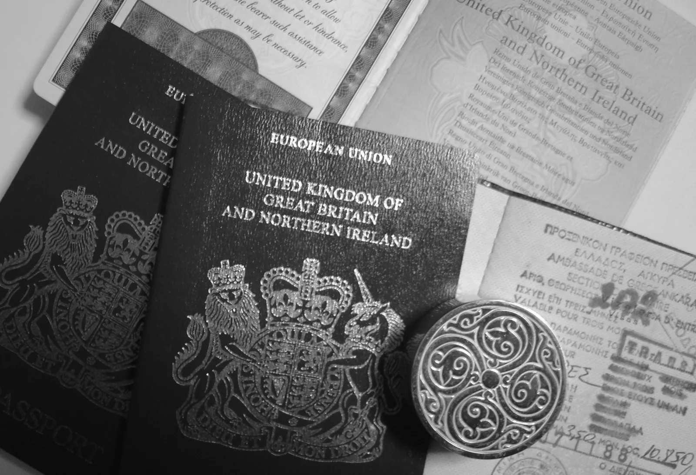
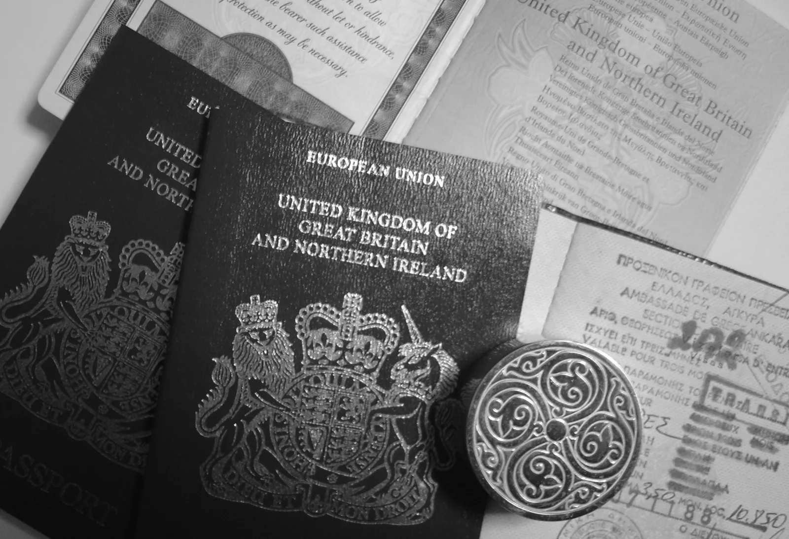

Información / contacto
Descubre más sobre viajar a Mozambique
¡Hay tantas cosas que contarte! Hemos resumido las cosas más importantes en forma de enlaces:
(haz clic sobre el enlace y llagarás a cada información. Otro clic, te lleva de vuelta aquí)
Alojamiento
Nuestro centro de kitesurf está situado en la playa del “Complexo Palmeiras”, un pequeño centro hotelero tradicional, perfectamente integrado en la naturaleza. Equipado con Wifi, bar de playa y restaurante, lo recomendamos a todos nuestros huéspedes. Bilene dispone de varios hoteles de diversa categoría con los que también trabajamos, no dudes en ponerse en contacto con nosotros para obtener más información sobre las posibilidades de alojamiento en el lugar.


 LOS VUELOS
LOS VUELOS
Muchas aerolíneas operan en Maputo, la capital de Mozambique. Entre ellas, Ethiopian Airlines Qatar Arways South Africa Airways Turkish Airlines, TAAG. Estas compañías generalmente ofrecen vuelos con escala. TAP Portugal ofrece un vuelo directo desde Lisboa. A modo orientativo, un vuelo a mozambique ronda los 700€ ida y vuelta por persona. En cuanto a comparador de vuelos, Google suele localizar siempre buenos precios. En cualquier caso, consulta con nosotros, ya que a veces conocemos mejores ofertas. Google vuelos


Visados de entrada Mozambique
Desde mayo de 2023, el visado se expide directamente a tu llegada al aeropuerto, previa presentación de tu pasaporte, que necesariamente debe tener una validez superior a 6 meses desde la fecha de tu llegada, así como la famosa “carta de alojamiento” que te enviaremos. a usted por adelantado. El trámite te costará 10€, las autoridades te entregarán un recibo que es importante conservar contigo durante toda tu estancia. Para una estancia prevista superior a 30 días, no dude en contactarnos.
 

Transbordos Aeropuerto
Se realizan en taxi o bus privado en función del tamaño del grupo. La carretera hasta Bilene es asfaltada y está en buen estado, en medio de paisajes típicos africanos. Tenemos un acuerdo de colaboración con empresas locales de confianza (tanto en calidad como en precios), por lo que podemos encargarnos de tus traslados sin ningún problema.


La situación en Mozambique
Mozambique es un país tranquilo y acogedor, sus habitantes son cálidos y sonrientes. Muchos de nuestros huéspedes han visitado diferentes áreas, en taxi o incluso a bordo de las tradicionales "chapas" (transporte local). También hemos recibido a familias enteras, con niños pequeños, que han viajado hasta aquí en autocaravanas y 4x4 equipados : ubuntu-overland.

Precauciones sanitarias
Como para cualquier viaje que realices fuera del espacio Schengen, te recomendamos que contrates un seguro sanitario para viajes. Teresa es enfermera de emergencias con mucha experiencia (bueno a veces también atiende a animales), por lo que viajamos bastante tranquilos en todas nuestras excursiones. El centro de kite, está en una zona totalmente segura y protegida, y si algo realmente sucede, Mozambique tiene varios hospitales privados con personal competente, transporte sanitario en ambulancias y en Helicóptero. No se requiere vacunación para Mozambique. Antipalúdicos: recomendados si vas a visitar parques o reservas naturales.

Que llevarte a Mozambique
En Bilene disfrutarás de un clima tropical perfecto. La temperatura media ronda los 30°, y el agua es también muy cálida. Habitualmente navegamos con Lycra, aunque más por protección solar. Un shorty puede ser útil para días con viento fuerte, te permitirá estar más de 4 o 5 horas en el agua sin sentir frio. Sabemos que preparar una maleta es algo muy personal, pero aquí van algunas recomendaciones básicas: Protector solar, gafas de sol (si vas a hacer kitesurf con ellas, es preferible utilizar una correa o similar para no perderlas en el agua). Repelente de mosquitos, una gorra o sombrero, toalla de playa y un cortavientos. Aquí no te hará falta 2 maletas llenas de ropa, un par de pantalones cortos, unas camisetas y listo.
Contacta con nosotros
¡A Mozambique no han llegado los robots, solo hablarás con personas!